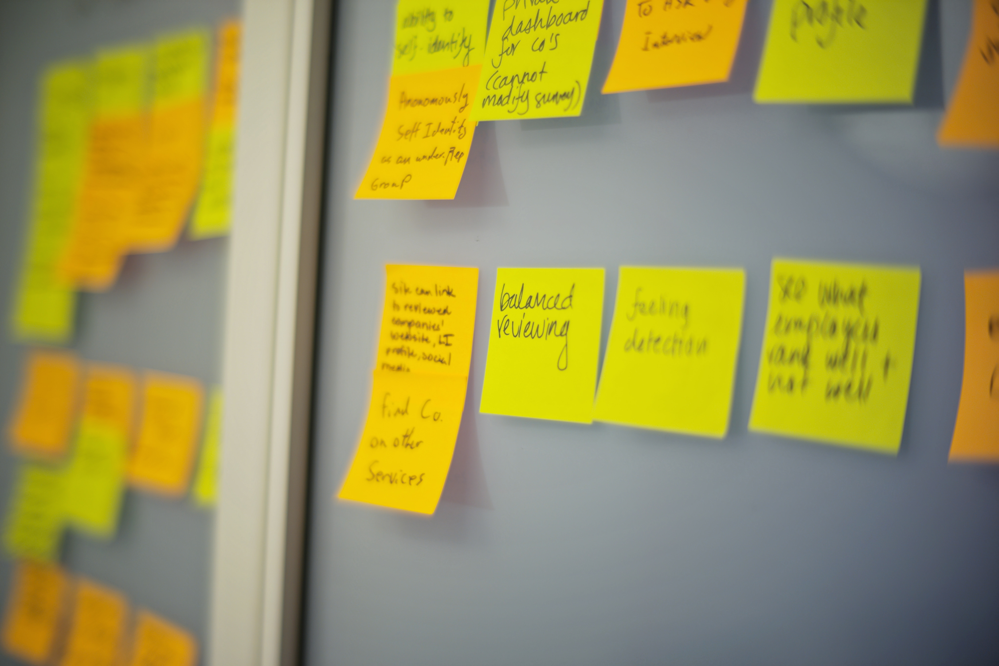

Diseño marketplace para Casa Nómada

Casa Nómada es un emprendimiento que propone embellecer espacios usando muebles únicos fabricados con materiales nobles.
Casa Nómada es un emprendimiento que propone embellecer espacios usando muebles únicos fabricados con materiales nobles.
Jenny es la mujer que está detrás de este gran proyecto que ya lleva 2 años diseñando y construyendo espacios inspiradores. Hasta el momento solo ha usado las redes sociales para contactarse con sus clientes y de vez en cuando sube fotos de algunos proyectos concretados.
3 semanas
Proponer mejoras que ayuden a Casa Nómada a distinguirse de otros emprendimientos
Para conocer cuales son las necesidades de los usuarios nos contactamos con antiguos clientes de de Casa nómada y con posibles clientes interesados en la propuesta entregada por este emprendimiento. Gracias a este acercamiento nos dimos cuenta de lo importante que es entregar respuestas lo más inmediatas posibles a los usuarios y que este proceso sea cercano, y fácil. También aprendimos que la cultura de los usuarios los motiva a buscar inspiración en redes sociales y concretan su compra por medio de páginas web, pero que ante el más mínimo detalle, los usuarios abandonan la página y continuaban con su búsqueda.

También realizamos un análisis de competencias, buscamos emprendimientos que vendieran algún producto por encargo e investigamos cómo es que logran que se concretice la venta por medio de un sitio web. Buscamos otros negocios que vendieran también muebles a pedido y que usaran página web. Los aprendizajes de esta actividad fueron de gran ayuda, nos permitieron saber cómo es que se tiene que llevar a cabo el proceso de compra y venta de los productos, como los distintos emprendimientos invitan a sus clientes a que les compren, como mantienen contacto con ellos, etc
Después de una semana de ardua investigación, llegó el momento de definir nuestra propuesta, para esto realizamos un mapa de afinidad, que nos permitió dirigir nuestras ideas y determinar cuáles habían sido nuestros descubrimientos.
Nuestros descubrimientos nos llevaron a crear una página web que muestre el trabajo que realiza jenny y su equipo, que permita enviarle cotizaciones, que les de la libertad de crear lo que ellos quieran e inspirarse en otros diseños.

Realizamos testeos de baja fidelidad lo que nos llevó a realizar modificaciones al diseño que habíamos hecho.
Posteriormente volvimos a iterar el diseño hasta llegar a nuestra propuesta final.
Sientete libre de contactarme si crees que haremos un buen equipo
Sitio desarrollado por Fernanda Canales.
links a sitios